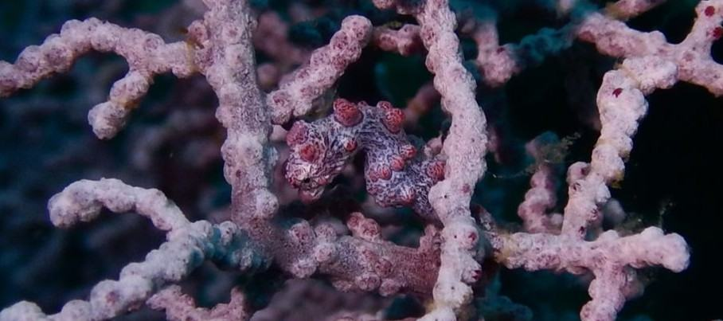
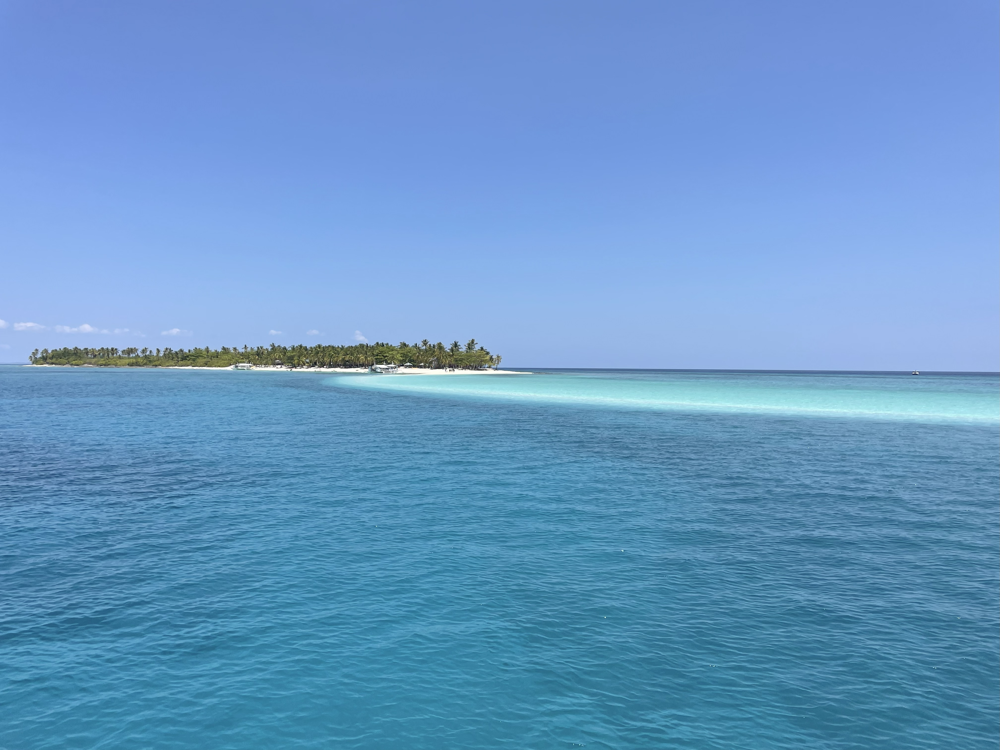
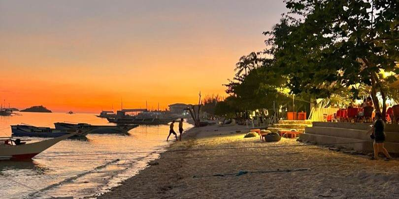
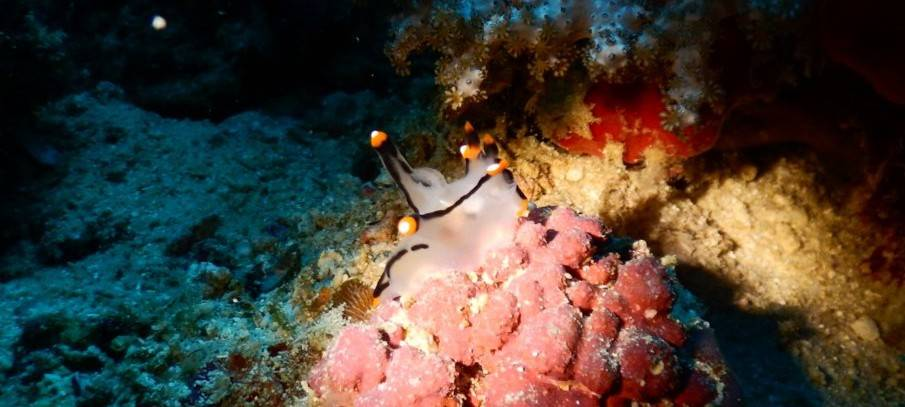
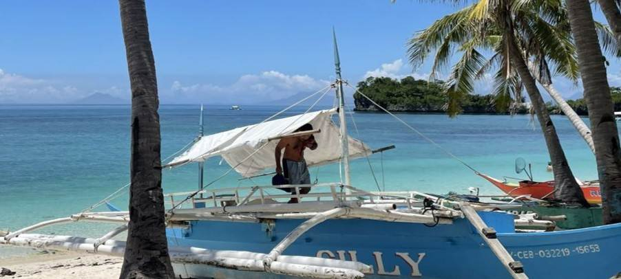

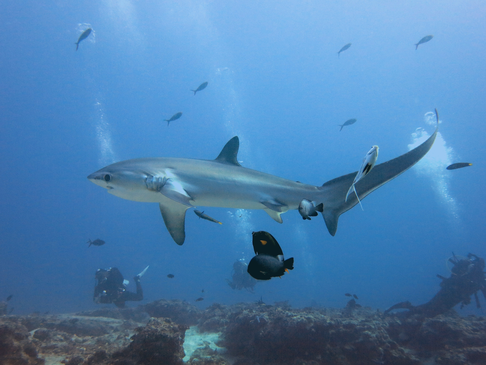
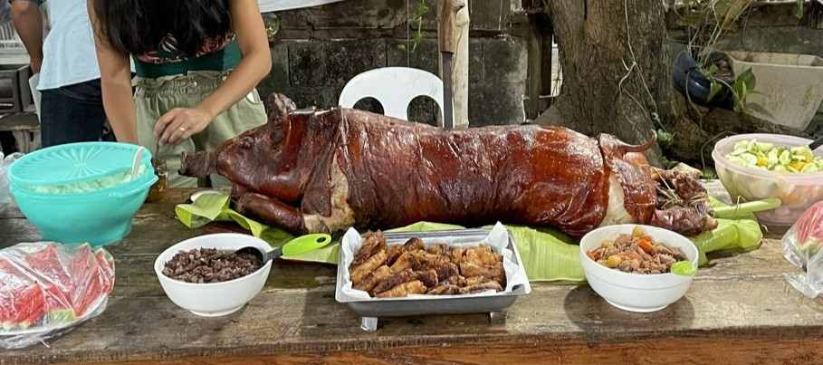
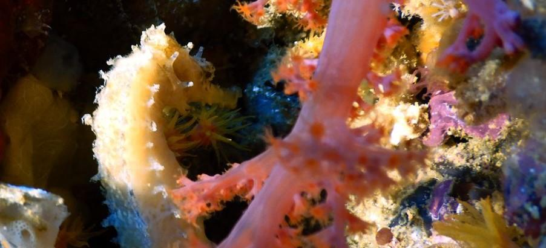
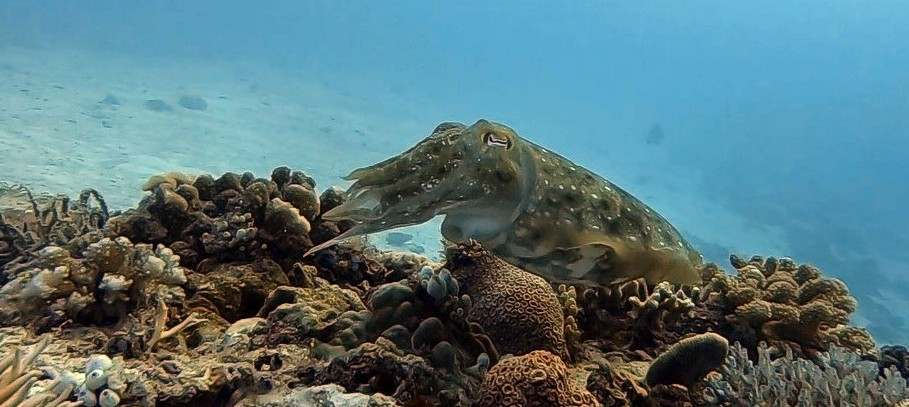
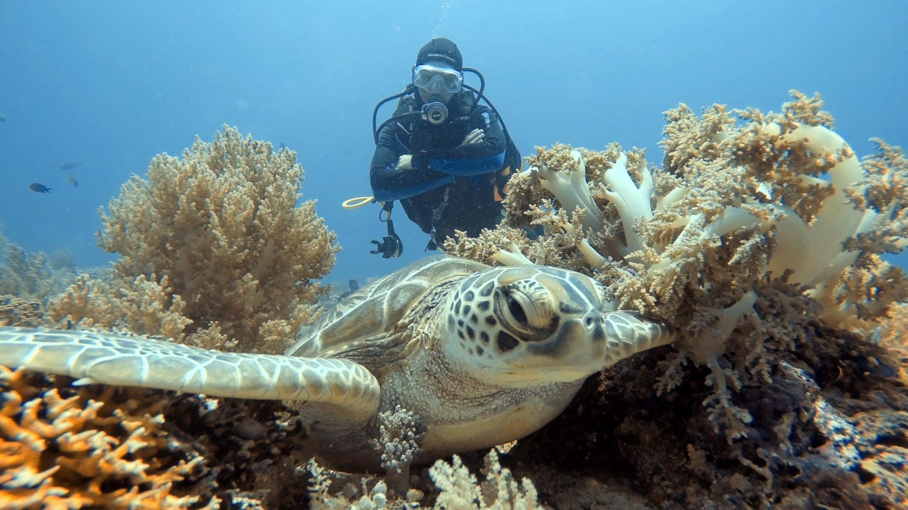
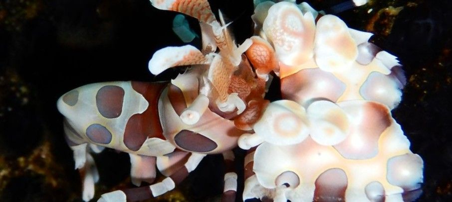
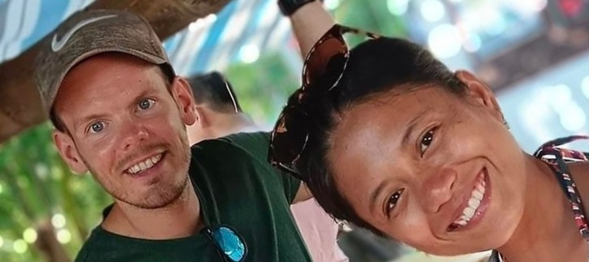
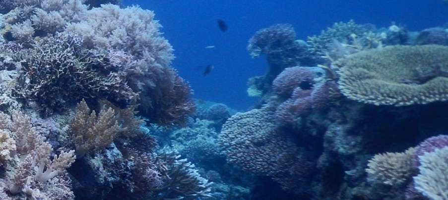
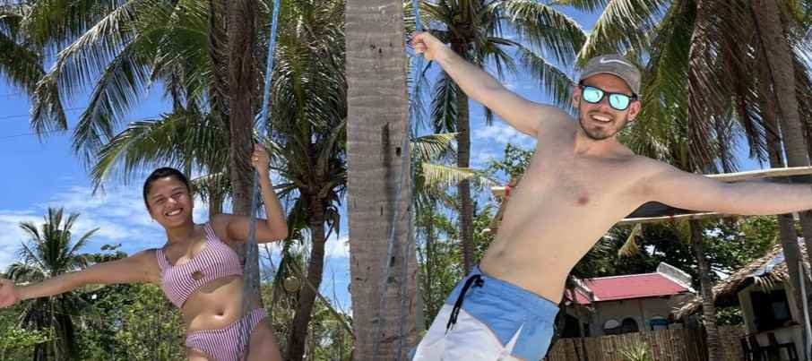
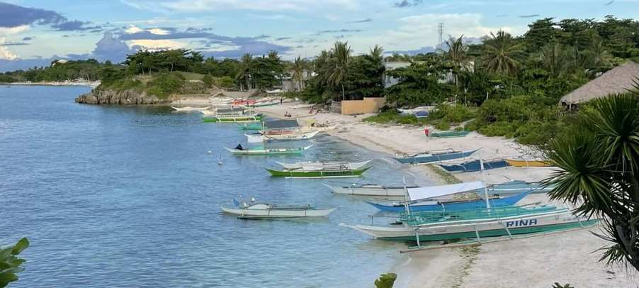
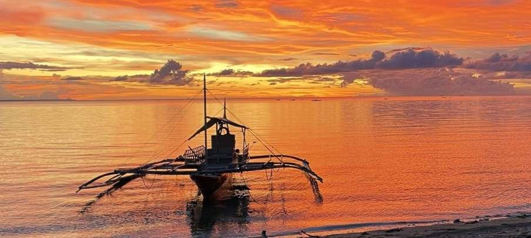
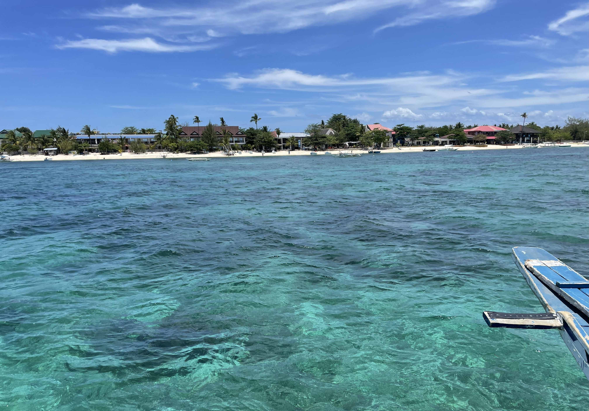
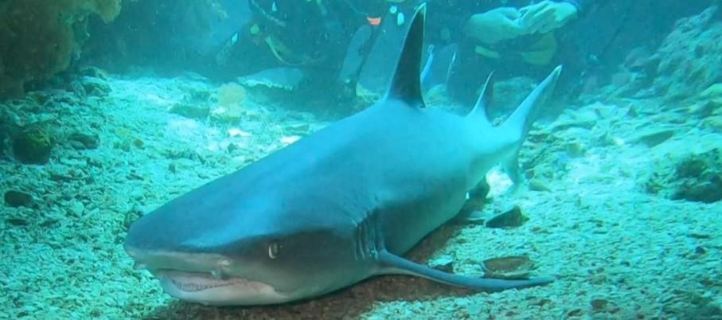
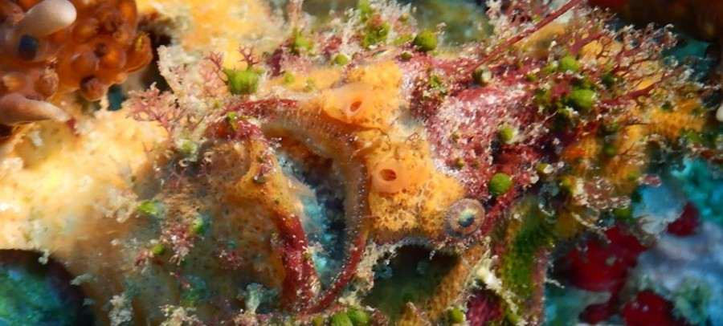
In the middle of Thresher sharks, islands and the local life
Travel Planning – Activities – Bookings – Tips and Tricks.
We run this page purely out of passion and love for the island, as we know it inside out and want to support the local community. We are not a traditional travel agency – we aim to be something better. Thanks to our family on the island and our many years of living and working here, we know the island, its resorts, dive schools, and locals extremely well and are always up to date. The Philippines is a developing country, and things are constantly changing (new transfer routes, dive shops opening and closing, new attractions coming and going). Also, expensive doesn’t always mean good, and cheap doesn’t mean bad. That’s why it’s great to have someone local you can rely on – that’s us: **Swiss quality with local knowledge.**
We provide recommendations, guidance, and plenty of extra information about diving, dive courses, accommodation, transfers, food, activities, and special places. For Malapascua itself, we can handle bookings for resorts, dive shops, transfers, and activities for you. On the island, we’re also happy to offer support if needed. Malapascua should remain an unforgettable highlight for every visitor – whether diver or non-diver, single or couple, young or old, with or without children.
The region around Malapascua offers authentic local island life, crystal-clear waters, beautiful beaches, and a rich underwater world — including thresher sharks, seahorses, nudibranchs, sea snakes, and vibrant, healthy coral reefs.
Malapascua is not a typical tourist island. On Malapascua, the locals themselves live and work on the island — you’re truly part of the local life. That’s what makes this island so special. Since Filipinos of all ages speak English very well, communication is easy. Their openness and hospitality can be felt everywhere, allowing you to move around freely and feel welcome wherever you go. At the local market, you’ll share meals with residents, and if you like, you can later join them for karaoke or try *balot* — a traditional Filipino snack.
Even for non-divers, car-free Malapascua has a lot to offer — stunning white sandy beaches, breathtaking deep-red sunsets, delicious happy hours, relaxing massages, yoga, snorkeling, island hopping, and much more.
Of course, Malapascua is known as one of the world’s top diving destinations. Beautiful, healthy soft coral reefs, black coral forests, steep walls, pinnacles, tunnels, and sandy macro areas offer incredible variety. Water temperatures range between a pleasant 26 and 30°C throughout the year, making night dives highly recommended as well. Underwater, you can spot thresher sharks, tiger sharks, reef sharks (whitetip and young blacktip), devil rays, turtles, sea snakes, a wide range of nudibranchs including the Spanish dancer, seahorses (including pygmy ones), frogfish, various scorpionfish, batfish, mackerel, octopuses (including the blue-ringed octopus), cuttlefish, crabs of all sizes, and the beautiful mandarin fish during their mating ritual — all year round.
Around Cebu Airport — the main gateway to Malapascua — there are many great areas for both divers and non-divers that can easily be combined with a stay on Malapascua without losing much travel time. These include Cebu itself, as well as Bohol, Siquijor, Moalboal, Dauin, and more. With a flight to Cebu, you’ve already landed right in the middle of paradise.
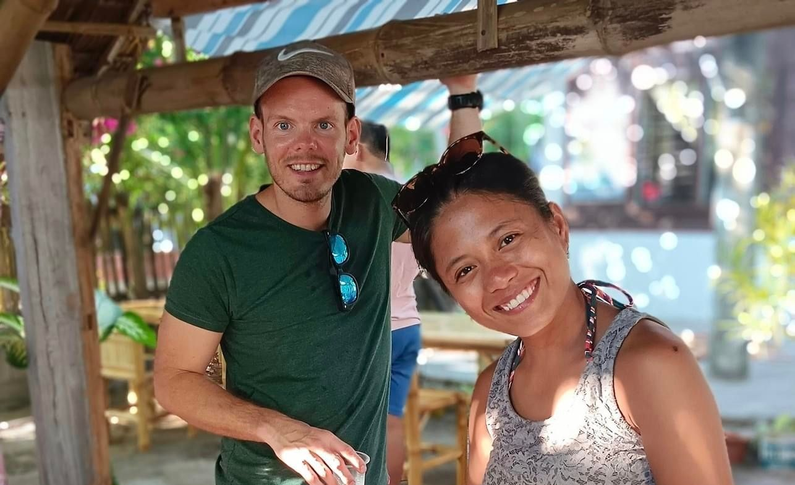 Vanessa was born in 1996 and grew up on Malapascua. She is the oldest of seven siblings, and her father was the first local dive instructor on the island. Since 2014, Vanessa has been working with great passion and extensive knowledge as a dive guide and instructor in various dive centers in Malapascua. Since 2021, she has also been speaking and teaching in German, as she lived and worked in Switzerland from 2020 to 2024. In the Philippines and neighboring countries, she has already explored numerous dive sites.
Dominik was born in 1988 and grew up in Switzerland. Since meeting Vanessa in 2017 and marrying her in 2019, he has been living alternately in Malapascua and Switzerland. He has been a dive instructor since 2017 and has explored various dive sites in and around Malapascua as well as across the Philippines, building many great connections along the way. He developed good organizational skills and a strong customer focus during his 20 years of experience as a customer advisor in Switzerland.
Write us for any questions, concrete planning, or individual requests (afterwards also possible via WhatsApp or Instagram):